フィールドグループ
GROUP · 散らばったフィールドを一つのまとまりに集める枠
フィールドグループとは
- 1.1フィールドの追加と属性パネルの構成
1.1フィールドの追加と属性パネルの構成
概要
フィールドグループ(GROUP)は、散らばっているフィールドを一つのまとまりに集める枠です。バイタルサインのように一緒に読まないと意味が通じない項目を一つのボックスに入れて表示します。他のタイプと最も大きく異なる点は、新しい欄を作らないことです — フォームにすでにあるフィールドを選んでグループ内へ移す方式です。3章 そのため、グループは値を直接持たず、値は各メンバーがそのまま持っています。
画面説明
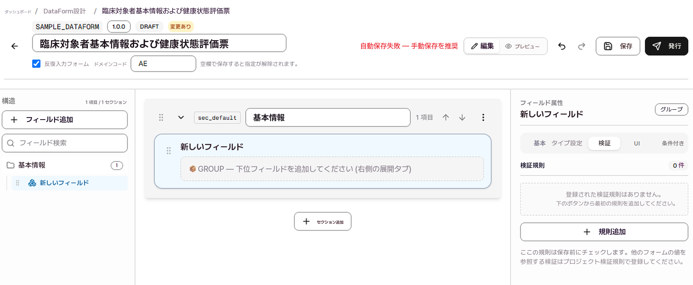
[+ フィールド追加] — ここでタイプを指定するとフィールドが作成されます。
構造ツリーに新しいフィールドが追加されます。アイコンはまとまりの形です。
WYSIWYG キャンバスにはボックスの代わりに案内だけが表示されます — 「GROUP — 下位フィールドを追加してください (右側の展開タブ)」。メンバーが0件だからです。3.1
タイプバッジ「フィールドグループ」 — 選択したフィールドのタイプです。追加した後は変更できません。
属性タブ 5種 — 基本 · タイプ設定 · 検証 · UI · 条件付き。このマニュアルの2~6章が各タブに対応します。
⚠ このキャプチャは「検証」タブが開いた状態です。基本タブの項目(fieldKey · 表示名 · 必須入力 · SDV)は2章で扱います。なお、基本タブには他のタイプにあるAE意味ロールと未測定宣言を許可が表示されません — グループは値を持たないため、この二つの機能が成り立たないからです。7.2
注意事項
必須確認 データ破損 · フォーム完了不可
- • ⛔ メンバーを入れないと、このフィールドは何の役にも立ちません。キャンバスにボックスが表示されないのがその状態です — 必ずタイプ設定タブでフィールドを入れてください。3章
誤解しやすい動作
- • グループは値を持ちません。値はメンバーがそれぞれ持っており、グループはまとめて表示する役割だけを担います。そのため、抽出データでもメンバーがそれぞれ独立した項目として出力されます。4.3
- • 先にフィールドを作り、後でまとめます。グループを先に作っても入れるフィールドがなければ何もできないため、まとめる項目を先に追加してください。3.1
参考
- • キャンバス左側のオレンジ色のバーは「保存前の変更あり」の表示です。グループ候補を示すものではなく、保存すると消えます。
基本タブ — 名前 · 必須 · 検証対象
- 2.1fieldKey · 表示名 · ヘルプ
- 2.2必須入力
- 2.3SDV検証対象 (CRA原資料照合)
2.1fieldKey · 表示名 · ヘルプ
概要
グループの名前を決める領域です。保存キー(fieldKey)と画面に表示される名前(label)は別々の値です。グループの表示名はボックスのタイトルになるため、中に何がまとめられているかが一目で分かるように記入してください。
画面説明
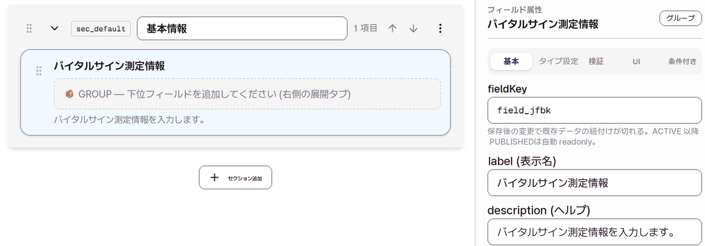
label (表示名) — ボックスの上に表示するタイトルを入力します。キャプチャでは バイタルサイン測定情報 です。
キャンバスのボックスのタイトルとして表示されます。メンバーそれぞれの名前とは別の層です — メンバーの名前は各メンバーの基本タブで別途決めます。3.3
description (ヘルプ) — ボックスの下に表示する補助説明を入力します。空欄にすると表示されません。
ボックスの下にグレーの文字で表示されます。キャプチャでは「バイタルサイン測定情報を入力します。」です。
fieldKey — グループのキーです。field_jfbk のように自動で付与され、⚠ グループのキーには値が保存されません — 値はメンバーのキーにそれぞれ保存されます。4.3
注意事項
必須確認 データ破損 · フォーム完了不可
- • まとまりの基準を表示名で明らかにしてください。「測定情報」だけでは、何をいつ測ったものか分かりません — ボックスのタイトルがそのままそのまとまりの意味です。
- • メンバー全体に該当する案内だけをヘルプに記入してください。特定の項目だけに該当する説明は、そのメンバー自身のヘルプに記入する必要があります — グループのヘルプはボックス全体に付きます。5.4
誤解しやすい動作
- • グループの fieldKey は値とは無関係です。ただし、条件付き表示6章とグループ間の参照に使われるため、保存した後は変更しないでください。
- • 表示名(label)はいつでも変更できます。保存された値には影響しません。
2.2必須入力
概要
このグループを必ず埋めないとフォームを完了できないようにするかどうかを決めます。⚠ テーブル型とは動作が異なります。テーブル型は列の必須が表全体を必須に引き上げますが、グループはメンバーの必須と互いに独立しています — メンバーの必須はそのメンバー自身の属性として別に集計されます。
画面説明
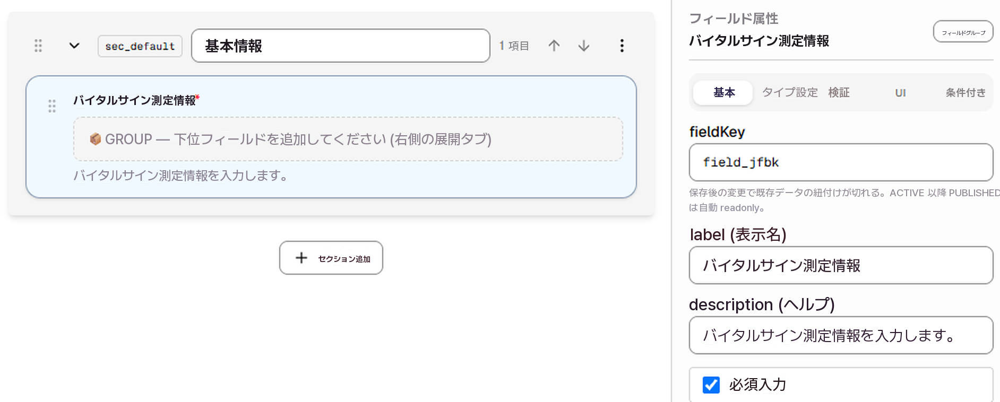
* が表示される必須入力 — 選択すると、このグループが必須項目になります。メンバーのうち一つも埋められていないと、フォームを完了できません。
キャンバスのボックスのタイトルの右に赤い * が表示されます。メンバーごとに付く星印は、各メンバーの基本タブで別途決めます。
label · description — 2.1 で入力した値がそのまま表示されます。
注意事項
必須確認 データ破損 · フォーム完了不可
- • ⛔ グループの必須とメンバーの必須を混同しないでください。グループを必須にしても、メンバーを一つだけ埋めればグループは満たされます。メンバーごとに必ず入力させる必要があるなら、各メンバーで必須をオンにする必要があります。
- • ⛔ 逆に、グループの必須をオフにしても、メンバーの必須はそのまま有効です。メンバーは独立したフィールドなので、自分の必須設定がそのまま集計されます — テーブル型のように、コンテナをオフにしてまとめて省略することはできません。7.1
- • グループを条件付きで非表示にすると、メンバーも一緒に非表示になり、必須チェックから除外されます。6.1
誤解しやすい動作
- • ほとんどの場合、グループの必須は必要ありません。入力させるべき項目が決まっているなら、そのメンバーで必須をオンにする方が意味が明確です。
2.3SDV検証対象 (CRA原資料照合)
概要
SDV(Source Data Verification) は、臨床開発モニター(CRA)が入力値を医療機関の原資料と照合する手順です。この設定はすべてのフィールドタイプで共通なので、画面もタイプに関係なく同じです。ただし、グループに指定することはお勧めしません — 下の注意事項を読んでください。
画面説明


SDV検証対象 (CRA原資料照合) — 選択すると、このフィールドが CRA の照合リストに含まれます。
選択状態に変わると、下位項目が有効になります。
検証必須 (未検証時は品質 PENDING) — ①を選択した後でなければ指定できません。選択すると、CRA が照合を終えるまで、そのデータの品質ステータスが PENDING のままになります。
①を選択する前は、②が薄く表示されて無効です。画面の案内のとおり「検証対象に指定した場合のみ必須かどうかを設定できます。」
注意事項
必須確認 データ破損 · フォーム完了不可
- • ⛔ SDV はグループではなくメンバーに指定してください。グループ自体には値がないため、照合する対象がありません — 実際に原資料と突き合わせる値は、平均動脈圧 · 脈圧のようなメンバーが持っています。1.1
- • ⛔ グループでオンにしておくと、メンバーでオンにしたものと勘違いしやすくなります。メンバーは独立したフィールドなので、グループの設定はメンバーに引き継がれません — メンバーごとに別途オンにする必要があります。
誤解しやすい動作
- • SDV は入力した本人が実施することはできません。システムがクロス検証(Cross-User SoD)を強制するため、入力者と検証者は必ず別の人である必要があります。
参考
- • 品質ステータスは PENDING → VERIFIED → CLEAN の順に進みます。検証必須に指定したフィールドが一つでも未検証であれば、そのデータは CLEAN になりません。
タイプ設定タブ — メンバー構成 (このタイプの中心)
- 3.1メンバーがない最初の状態
- 3.2グループに入れるフィールドを選ぶ
- 3.3追加結果 — フィールドがグループ内へ移動する
- 3.4行あたりの項目数 (itemsPerRow)
3.1メンバーがない最初の状態
概要
フィールドグループで最も重要なタブです。設定は二つだけです — 1行に何個ずつ並べるか(行あたりの項目数)と、どのフィールドをまとめるか(メンバーピッカー)。キャプチャは、フォームに「平均動脈圧(MAP)」と「脈圧」の二つのフィールドを先に作っておいた状態です — グループはその二つを新しく作るのではなく取り込むものだからです。
画面説明
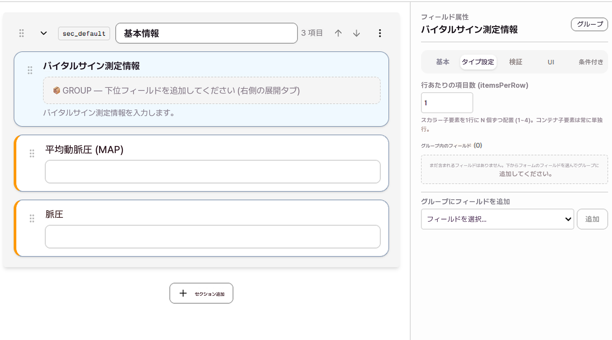
行あたりの項目数 (itemsPerRow) — ボックス内でメンバーを1行に何個ずつ配置するかを決めます。1~4 から選び、最初は 1 です。3.4
グループにフィールドを追加 — フォームにあるフィールドを選んでグループに入れます。3.2
[追加] — ②で選んだフィールドをグループ内へ移します。3.3
グループ内のフィールド (0) — メンバー一覧です。最初は「まだ含まれるフィールドはありません。下からフォームのフィールドを選んでグループに追加してください。」という案内が表示されます。
行あたりの項目数の案内 — 「スカラー子要素を1行に N 個ずつ配置 (1~4)。コンテナ子要素は常に単独行。」 表や他のグループをメンバーとして入れると、そのメンバーだけが1行を丸ごと使います。
「平均動脈圧 (MAP)」と「脈圧」が、まだグループの外に独立したフィールドとして置かれています。この二つが②の候補です。
タイプバッジ「フィールドグループ」 — 設定中のフィールドのタイプです。
注意事項
必須確認 データ破損 · フォーム完了不可
- • ⛔ まとめるフィールドを先に作る必要があります。フォームに他のフィールドがなければ、ピッカーに「追加できるフィールドがありません。先にフォームにフィールドを追加してください。」だけが表示され、何もできません。1.1
誤解しやすい動作
- • デフォルト値(defaultValue)の項目はありません。グループは値を持たないため、あらかじめ埋めておく対象がありません — デフォルト値が必要ならメンバーに指定してください。7.2
- • 自動計算(calculation)の項目もありません。まとまり全体を一つの数値として算出することは成り立ちません。計算が必要なら数値のメンバーに設定してください。7.2
- • グループの中にグループを入れることができます。ただし3重のネストまでで、上限を超える候補はピッカーで選択できず、「— ネスト深さの上限超過」という理由が付きます。3.2
3.2グループに入れるフィールドを選ぶ
概要
ピッカーでグループに入れるフィールドを一つ選びます。一覧にはフォームの最上位フィールドが名前とタイプとともに表示されます。選ぶだけでは何も起こらず、[追加] を押して初めて実際に移されます。3.3 一度に一つずつしか選べないため、メンバーの数だけ繰り返します。
画面説明
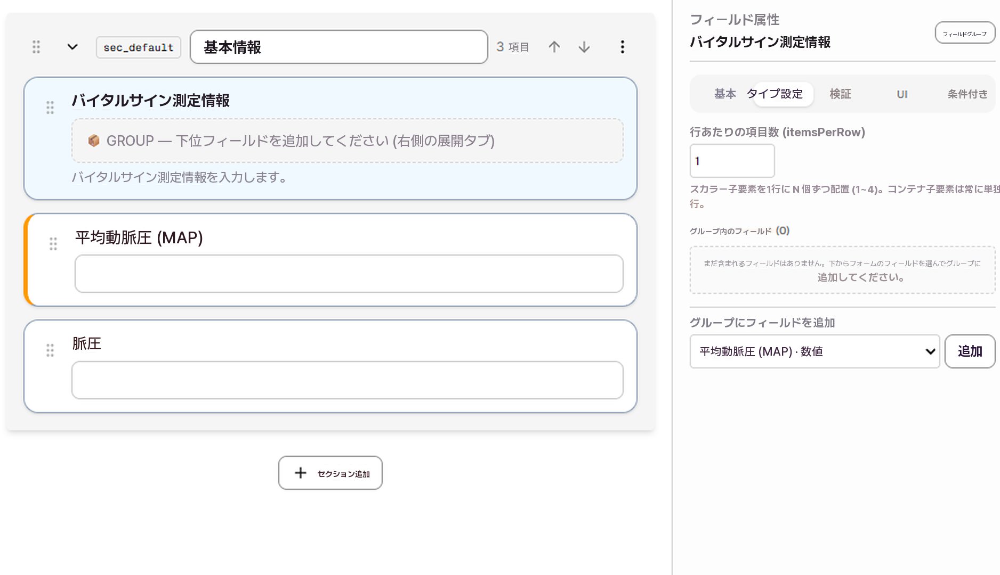
平均動脈圧 (MAP) · 数値 を選んだ状態 — まだ移されていないグループにフィールドを追加 — キャプチャでは 平均動脈圧 (MAP) · 数値 を選んでいます。一覧の項目は表示名 · タイプの形式なので、同じ名前が複数あっても区別できます。
[追加] — 選択前は薄く表示されて無効で、選んだ後に押すとグループ内へ移されます。3.3
キャンバスはまだそのままです。「平均動脈圧 (MAP)」は依然としてグループの外にあります — ピッカーで選んだだけでは移されません。
グループ内のフィールド (0) — まだ0件です。
注意事項
必須確認 データ破損 · フォーム完了不可
- • ⛔ ネスト深さの上限を超えるグループは選べません。一覧に「— ネスト深さの上限超過」が付いて無効として表示されます — 隠さずに理由を表示するため、なぜ選べないのかをその場で確認できます。3.1
誤解しやすい動作
- • 一覧に表示されるのは最上位フィールドだけです。表(テーブル型)の列は表の中にだけある項目なので一覧に表示されません — グループでまとめることはできません。7.2
- • セクションヘッダーと、名前が空のフィールドも除外されます。名前のないフィールドを入れるには、先にそのフィールドに表示名を指定してください。2.1
参考
- • 順序は後で変更できます。入れた順序がそのまま表示順序になりますが、メンバー一覧の ∧ ∨ で調整できます。3.3
3.3追加結果 — フィールドがグループ内へ移動する
概要
このページがフィールドグループの核心です。[追加] を押すと、そのフィールドはコピーされるのではなく移されます — 最上位から抜けてグループの中に入ります。そのため、構造ツリーのフィールド数が一つ減り、そのフィールドはグループの下に一段インデントされて表示されます。
画面説明
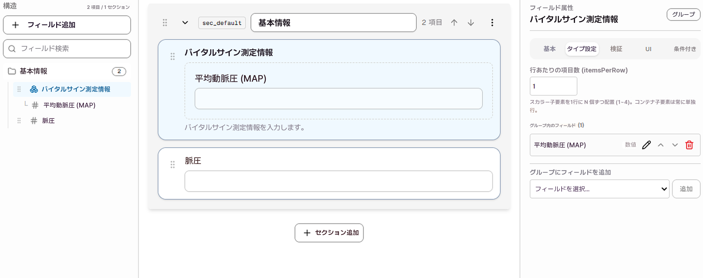
メンバー一覧に1件が追加されました。表示名とともにタイプバッジ(数値)が付きます。
構造ツリーで「平均動脈圧 (MAP)」がグループの下にインデントされます。もう最上位フィールドではありません。
キャンバスでも、そのフィールドがボックスの中に入ります。「脈圧」はまだ外に残っています。
メンバー操作アイコン3種 — 左から ✏ 編集 · ∧ ∨ 順序 · 🗑 です。鉛筆はそのメンバーの属性パネルへ移動し、メンバー自身の名前 · 必須 · 検証を設定できるようにします。矢印はメンバーの順序を変えます。⚠ 🗑 は削除ではなく「グループから外す」です — 押すと、そのフィールドは最上位に戻るだけで消えず、値もそのまま残ります。
グループ内のフィールド (1) — 件数が0から1に変わりました。
最上位フィールド数が3から2に減りました。メンバーがグループの中へ移ったためです。
ピッカーが「フィールドを選択…」に戻り、今入れたフィールドは候補から外れます。残りの「脈圧」を入れるには、同じ手順をもう一度繰り返します。
注意事項
必須確認 データ破損 · フォーム完了不可
- • ⛔ 🗑 を削除と誤解しないでください。グループから外すだけで、フィールドも値も消えません。フィールドを本当に削除するには、そのフィールドを選択して削除する必要があります。
- • グループを削除するとメンバーがどうなるかを先に確認してください。まとまりを解くだけのつもりなら、メンバーを一つずつ 🗑 で外してから空のグループを削除する方が安全です。
誤解しやすい動作
- • メンバーは依然として独立したフィールドです。グループの中へ移しても、自分の fieldKey · 必須 · 検証をそのまま持っているため、検証規則と条件付きで直接参照できます。表(テーブル型)の列と決定的に異なる点です。4.3 · 7.1
- • メンバーの設定はメンバーで行います。グループの属性パネルにはメンバーの必須や検証がありません — ✏ を押してそのメンバーへ移動してください。2.2
3.4行あたりの項目数 (itemsPerRow)
概要
ボックス内でメンバーを1行に何個ずつ並べるかを決めます。1~4 から選び、指定しなければ 1(縦に積む)です。値を変えるだけでキャンバスにすぐに反映されるため、結果をすぐに確認できます。⚠ これは配置だけを変える設定であり、保存される値には影響しません。
画面説明
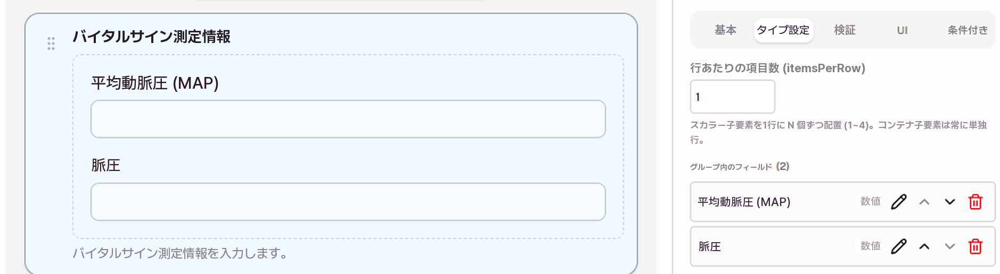
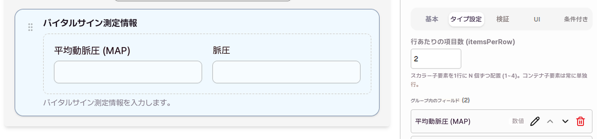
行あたりの項目数 (itemsPerRow) — 数字を直接入力します。1より小さい値や4より大きい値は、自動的に範囲内に合わせられます。
1 なら「平均動脈圧 (MAP)」と「脈圧」が上下に置かれ、2 なら左右に並んで置かれます。ボックス一つが占める縦の長さがその分短くなります。
注意事項
必須確認 データ破損 · フォーム完了不可
- • ⛔ 3 · 4 は慎重に使ってください。1行に四つ入れると各欄が狭くなり、長い表示名が切れます — レイアウト幅5.2と一緒に確認してください。
誤解しやすい動作
- • 一緒に読むべき項目は同じ行に置いてください。収縮期 · 拡張期血圧のように対で解釈する値は、並んでいてこそ記録者が書き間違いに気付けます。
- • 表 · 他のグループをメンバーとして入れると、この設定は無視されます。画面の案内のとおり「コンテナ子要素は常に単独行」なので、そのメンバーだけが1行を丸ごと使います。3.1
参考
- • 値を空にすると1に戻ります。縦に積むのが基本の配置です。
検証タブ — 保存前の値チェック
- 4.1検証規則がない状態
- 4.2規則の追加
- 4.3規則作成完了 — 他フィールドと比較
4.1検証規則がない状態
概要
保存する前に値が条件に合っているかをチェックする規則をまとめておくタブです。⚠ ここはグループ自身に設定する規則であり、グループには値がありません — そのため、使える規則は事実上一種類だけです4.3。メンバーそれぞれの値をチェックする規則は、そのメンバーの検証タブで作成してください。3.3
画面説明
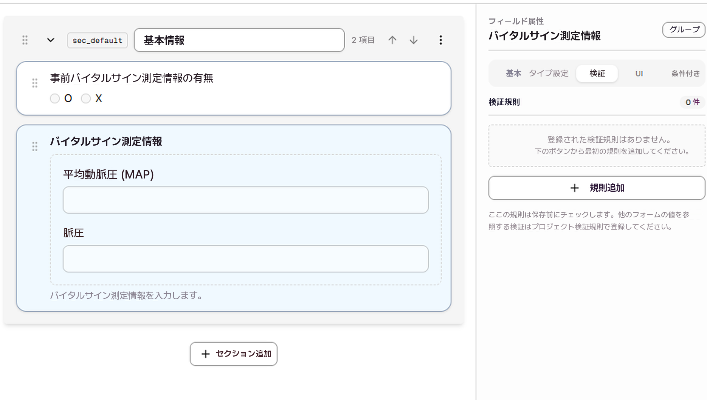
[+ 規則追加] — 最初の規則を作成します。選択した後の画面は 4.2 で説明します。
検証規則領域と、登録された規則数です。最初は 0 件 です。
規則がない場合は、「登録された検証規則はありません。下のボタンから最初の規則を追加してください。」という案内が表示されます。
下部の案内 — 「ここの規則は保存前にチェックします。他のフォームの値を参照する検証はプロジェクト検証規則で登録してください。」
注意事項
必須確認 データ破損 · フォーム完了不可
- • ⛔ メンバーの値のチェックはメンバーで行ってください。「平均動脈圧は40~200でなければならない」のような規則はそのメンバーの検証タブに設定するもので、ここのグループのタブに設定すると、見当違いの対象(値のないまとまり)をチェックすることになります。3.3
- • ⛔ 他のフォームの値を参照する検証は、ここでは作成できません。そのような規則は「プロジェクト検証規則」画面で登録してください — ただし、その画面で選べるのはメンバーであり、グループ自身ではありません。7.2
誤解しやすい動作
- • メンバー同士を比較する規則は、メンバー側で作成できます。グループのメンバーは最上位フィールドとして扱われるため、あるメンバーの検証タブで、他のメンバーを比較項目として選べます。4.3
- • キャプチャには最上位フィールドが二つあります。「事前バイタルサイン測定情報の有無」(単一選択)と「バイタルサイン測定情報」(グループ) — 前のフィールドの回答によってグループを入力させるかどうかが分かれる関係なので、4.3 で二つのフィールドを結ぶ規則を作成します。
4.2規則の追加
概要
4.1 の [+ 規則追加] を選択すると、規則 1 ブロックが作成されます。最初は「値の範囲」が設定されていますが、グループには比較する値そのものがありません。「他フィールドと比較」に変更してください — グループで使える唯一の種類です。4.3
画面説明
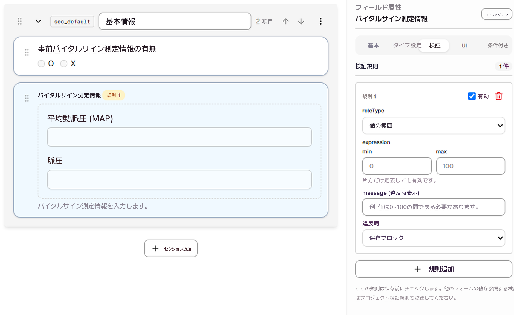
[+ 規則追加] — 規則をもう一つ作成します。(4.1 で選択したのと同じボタンです。)
キャンバスのボックスのタイトルの横に「規則 1」バッジが表示されます。
規則数が 1 件 に変わります。
有効チェックボックスと削除アイコン — 規則を削除せずに一時的に停止できます。
ruleType — 規則の種類です。作成直後は「値の範囲」なので、必ず「他フィールドと比較」に変更してください。
min — 値の範囲を選んだときに表示される下限の欄です。
max — 同じ条件で表示される上限の欄です。
message (違反時表示) — 規則に違反したときに、ユーザーに表示する文言です。
違反時 — 保存ブロックまたは警告から選択します。(ruleType によっては選べなくなることもあります — 4.3)
薄い文字の 0 · 100 と「片方だけ定義しても有効です。」は値の範囲に関する案内であり、設定された値ではありません。
注意事項
必須確認 データ破損 · フォーム完了不可
- • ⛔ 血圧の範囲をここに設定しないでください。min · max はグループ自身の値を見ますが、グループには値がないため何も起こりません — エラーも出ないため、規則を設定したと思い込んだまま見過ごすことになります。範囲はそのメンバーに設定してください。4.1
- • ⛔ 「形式 (正規表現)」をグループに設定すると、保存が最後までブロックされます。正規表現はまとまりを固定の内部文字列に変換してからチェックするため、どのような式を設定しても常に違反となり、記録者がフォームを保存する方法がなくなります。
- • ⛔ 「小数桁数」も動作しません。同じ理由です — 小数桁数は数値のメンバーに設定してください。4.1
- • message を空欄にすると、ユーザーはブロックされた理由が分かりません。必ず入力してください。
4.3規則作成完了 — 他フィールドと比較
概要
ruleType を他フィールドと比較に変更すると、同じフォームの他のフィールドの値と比べてチェックします。グループには値がないため、この規則だけが意味を持ちます — 比較対象がグループ自身ではなく他のフィールドだからです。⚠ 画面の案内の項目数に注目してください — そこにこのタイプの性質が表れています。
画面説明
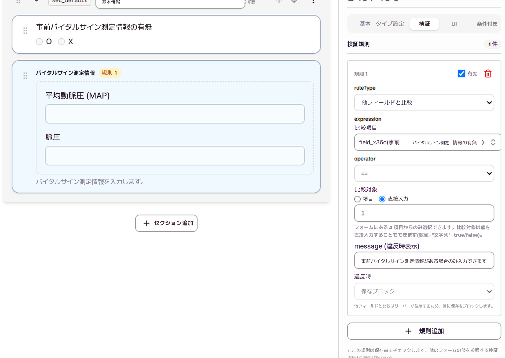
1 のときだけ保存されるように設定した状態ruleType = 他フィールドと比較 — 選択すると、下の欄が比較用に変わります。
比較項目 — キャプチャでは field_x36o(事前バイタルサイン測定情報の有無) です。⚠ グループ自身を選んではいけません。
operator — 比較方法です。キャプチャでは ==(等しい) です。
比較対象 — 項目と直接入力から選択します。キャプチャでは直接入力で 1 を入れています — 「事前バイタルサイン測定情報の有無」の保存値です。
message (違反時表示) — キャプチャでは 事前バイタルサイン測定情報がある場合のみ入力できます。 です。
違反時 — グレーで無効です。画面の案内のとおり「他フィールドと比較はサーバーが強制するため、常に保存をブロックします。」
画面の案内 — 「フォームにある 4 項目からのみ選択できます。」 ⚠ 最上位フィールドは二つ(事前の有無 · グループ)だけなのに4 項目です — グループのメンバー二つが候補に一緒に入っているためです。7.1
注意事項
必須確認 データ破損 · フォーム完了不可
- • ⛔ 比較項目としてグループ自身を選ばないでください。グループには値がないため
1と等しくなることは決してなく、メンバーを一つでも埋めた瞬間に違反となり、保存が最後までブロックされます。 - • ⛔ 比較対象には画面の文言ではなく保存値を入れます。「事前バイタルサイン測定情報の有無」は画面に
O·Xと表示されるため、保存値が本当に1かどうかを、そのフィールドの選択肢一覧で先に確認してください。 - • 同じ関係を条件付き表示6.2でも作成できます。両方を設定すると、尋ねもしないのに保存もブロックするという重複になるため、片方だけを使用してください — グループでは条件付き表示の方をお勧めします。6.1
誤解しやすい動作
- • グループのメンバーは一覧にそのまま表示されます。メンバーが最上位フィールドとして扱われるためで、そのため「平均動脈圧が入力されていれば…」のような規則を他のフィールドで設定できます。表(テーブル型)の列は一覧に表示されないため、これはできません。3.3
UIタブ — 画面配置と案内文
- 5.1UIタブの全体構成
- 5.2レイアウト幅
- 5.3読み取り専用 · 非表示
- 5.4placeholder · helpText
5.1全体構成
概要
値そのものではなく、画面にどう配置し、どう案内するかを決めるタブです。このタブの設定は保存されるデータ自体を変更しません。⚠ 五つの項目のうち、placeholder はグループでは動作しません — グループには文字を入れる入力欄がないためです。5.4
画面説明
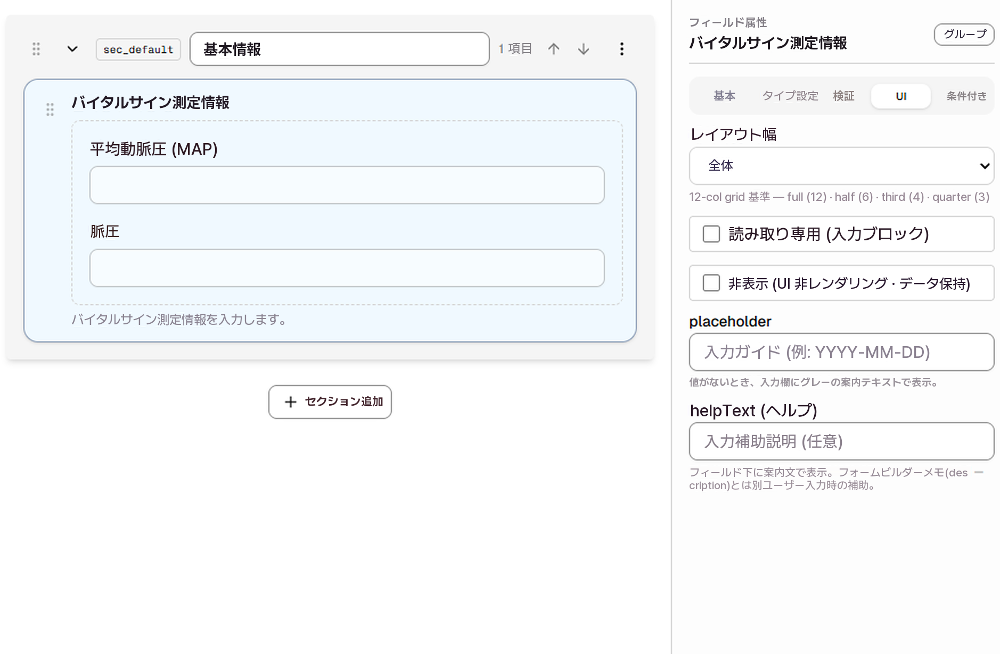
レイアウト幅 — フォームの1行の中でこのボックスが占める幅です。行あたりの項目数3.4と一緒に、ボックス内の配置を決めます。5.2
読み取り専用 (入力ブロック) — 表示はしますが、変更できないようにします。メンバーがまとめてロックされます。5.3
非表示 (UI 非レンダリング · データ保持) — 画面から隠します。ボックスとメンバーが一緒に消えます。5.3
placeholder — グループでは適用されません。メンバーの入力欄の案内文言は、各メンバーの UI タブで決めます。5.4
helpText (ヘルプ) — ボックスの下に表示する案内文言です。こちらは正常に動作します。5.4
タイプバッジ「フィールドグループ」
注意事項
必須確認 データ破損 · フォーム完了不可
- • ⛔ placeholder に入力しても画面は変わりません。グループは入力欄ではなくメンバーを入れるボックスなので、文字を入れる場所がありません — 欄の中の案内が必要なら、そのメンバーの UI タブに記入してください。5.4
- • ⛔ 非表示は保存された値を削除しません。画面上で隠れるだけで、メンバーの値はそのまま残り、抽出と監査証跡に含まれます。5.3
誤解しやすい動作
- • このタブの設定は保存された値を変えません。配置と案内だけが変わります。
参考
- • 読み取り専用と非表示を一緒に使用しないでください。非表示が優先して適用され、読み取り専用の設定は効果がありません。5.3
5.2レイアウト幅
概要
フォームの1行の中でこのボックスが占める幅を決めます。⚠ グループでは、この設定が行あたりの項目数3.4と掛け合わされます — 半分の幅で1行あたり2個にすると、各メンバーは全体の幅の1/4しか使えません。二つの設定を別々に見ずに、一緒に確認してください。
画面説明
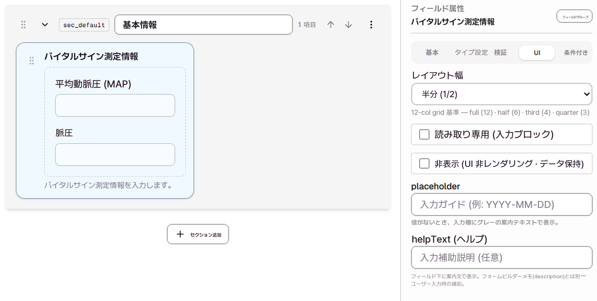
レイアウト幅 — 全体 · 半分 (1/2) · 1/3 · 1/4 から選択します。
ボックス全体が半分の幅に縮みます。中のメンバーも一緒に狭くなり、同じ行の残りの場所に他のフィールドが配置されます。
12-col grid 基準 — 画面の案内のとおり「full (12) · half (6) · third (4) · quarter (3)」です。
注意事項
必須確認 データ破損 · フォーム完了不可
- • ⛔ 狭い幅と大きな行あたりの項目数を一緒に使わないでください。半分の幅 × 1行あたり4個では、各欄が全体の1/8 になり、表示名も値も読めなくなります。3.4
誤解しやすい動作
- • メンバーが二つ以上なら、全体の幅をお勧めします。グループはボックスの枠とタイトルが場所をより多く使うため、同じ幅でも単独のフィールドより狭く感じられます。
- • メンバーが一つだけのグループなら、幅を狭めても構いません。ただし、そのような場合は、グループでまとめる理由があるかどうかをまず考えてください。1.1
参考
- • 指定しない場合は全体の幅が適用されます。
5.3読み取り専用 · 非表示
概要
ボックスを表示するが変更できないようにしたり、画面から隠すが値は保持したりする設定です。どちらも保存された値を削除せず、ボックス内のメンバー全員に適用されます — 一部のメンバーだけをロックしたり隠したりするには、そのメンバーの UI タブで別途指定する必要があります。
画面説明
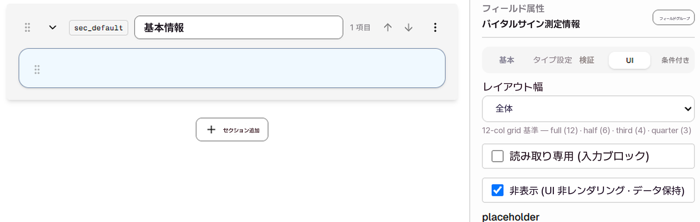
読み取り専用 (入力ブロック) — 選択すると、メンバーは表示されますが、記録者は修正できません。ボックスの中がすべてロックされます。
非表示 (UI 非レンダリング · データ保持) — 選択すると、入力画面にこのボックスが表示されません。
キャンバスのカードに空の枠だけが残ります。タイトルもメンバーもすべて表示されません。
レイアウト幅 — 5.2 で設定した値です。
注意事項
必須確認 データ破損 · フォーム完了不可
- • ⛔ 非表示で隠したメンバーの値はそのまま残ります。抽出と監査証跡に含まれるため、保管してはならない値であれば、隠すのではなく値を削除する必要があります。4.3
- • ⛔ 必須のメンバーを非表示にすると、フォームが完了しないことがあります。このタブの非表示は条件付き表示とは異なり、必須チェックを免除しません — 条件に応じて隠すには、条件付き表示を使用してください。2.2 · 6.1
誤解しやすい動作
- • 読み取り専用は、他の場所から取り込んだ値に使用してください。記録者が直接聞き取って記入する必要があるまとまりには使用しないでください。
参考
- • 非表示と読み取り専用を一緒に選択すると、非表示が優先して適用されます。
5.4placeholder · helpText
概要
ボックスの中と下に入る案内文言を決めます。グループでは二つの項目の運命が分かれます — helpText はボックスの下に正常に表示されますが、placeholder はどこにも使われません。グループは入力欄ではなく、メンバーを入れるボックスだからです。
画面説明
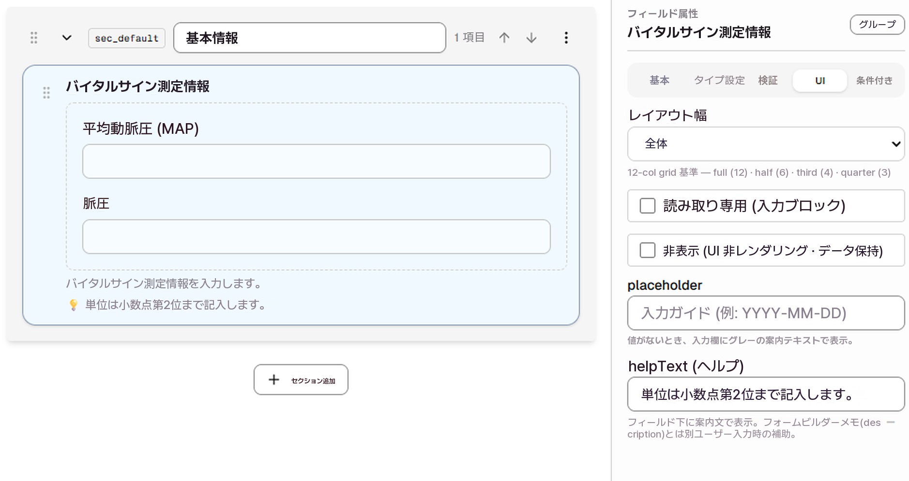
placeholder — 値がないときに入力欄に表示する薄い文字です。グループには適用されません。
メンバーの入力欄は各メンバー自身の設定に従います — キャプチャの二つの欄が空なのは、それらのメンバーに placeholder を指定していないためであり、ここに何を入力しても埋まりません。5.1
helpText (ヘルプ) — ボックスの下に表示する案内文言です。キャプチャでは「単位は小数点第2位まで記入します。」です。
ボックスの下に 💡 アイコンとともに表示されます。こちらは正常に動作します。
description (ヘルプ) — 2.1 で入力した文言です。helpText とは別の項目で、アイコンなしで上の行に表示されます。
注意事項
必須確認 データ破損 · フォーム完了不可
- • ⛔ placeholder に記入した文言はどこにも表示されません。欄の中の案内が必要なら、✏ でそのメンバーに入り、そこで指定してください。3.3 · 5.1
- • ⛔ 特定のメンバーだけに該当する内容を helpText に記入しないでください。ボックス全体に付く文言なので、他のメンバーにも適用されるものと誤解されます。2.1
誤解しやすい動作
- • メンバー全体にかかる規則は helpText に記入してください。キャプチャのように「単位は小数点第2位まで記入します。」と記入すると、ボックス内のすべての欄に該当する案内として読まれます。
- • description と helpText は一緒に表示されます。両方を入力すると 2 行になるため、同じ内容を二度書かないでください。2.1
条件付きタブ — 他の値に応じて表示する
- 6.1条件付き表示の有効化
- 6.2条件の設定
6.1条件付き表示の有効化
概要
他のフィールドの値に応じてこのボックスを表示したり隠したりする機能です。グループで特に強力な機能です — 条件一つでボックス内のメンバー全員が一緒に表示されたり消えたりするためです。メンバーごとに同じ条件を繰り返し設定する必要はありません。
画面説明
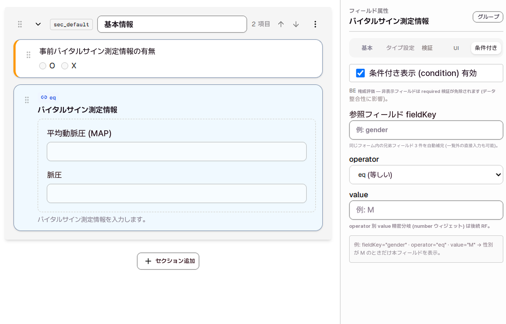
条件付き表示 (condition) 有効 — 選択すると、下の条件設定が表示されます。
キャンバスのボックスの上に 🔗 eq バッジが表示され、条件が適用されたことを知らせます。
参照フィールド fieldKey — 条件の基準となる、同じフォーム内の他のフィールドです。⚠ 画面の案内が「同じフォーム内の兄弟フィールド 3 件を自動補完」と示しているとおり、グループのメンバーも候補に含まれます。4.3
operator — 比較方法です。デフォルト値はeq (等しい)です。
value — 比較する値です。参照フィールドの保存値を入力します。6.2
⚠ 画面の案内 — 「非表示フィールドは required 検証が免除されます (データ整合性に影響)。」 条件の判定はシステムが実行します。
下部の例 — fieldKey="gender" · operator="eq" · value="M" → 性別が M のときだけ本フィールドを表示。
注意事項
必須確認 データ破損 · フォーム完了不可
- • ⛔ メンバーに別途設定した条件は、グループの条件と一緒に適用されます。グループが表示されていても、メンバー自身の条件が偽ならそのメンバーは非表示のままです — 二つの条件を重ねて設定すると、なぜ表示されないのかを追跡しにくくなります。
- • ⛔ すでに入力した後で条件が偽になると、ボックスが画面から消えます。メンバーの値はそのまま残るため、前の質問の回答を後で変更した場合は、残っている値を別途削除する必要があります。5.3
誤解しやすい動作
- • 条件はメンバーにも一緒に適用されます。グループが非表示になると中のメンバーもすべて非表示になり、必須チェックから除外されます — そのため、まとめておけば条件を一度設定するだけで済みます。2.2
参考
- • 条件を有効にして参照フィールドを空欄にすると、条件は成立しません。必ず②~④をすべて入力してください。6.2
6.2条件の設定
概要
6.1 で有効にした条件を最後まで入力した状態です。この設定では、「事前バイタルサイン測定情報の有無」の値が 1 のときだけボックスが画面に表示され、中の二つのメンバーも一緒に表示されます。4.3 の検証規則と同じ参照フィールドを使いますが、保存をブロックする代わりに最初から尋ねない方法です。
画面説明
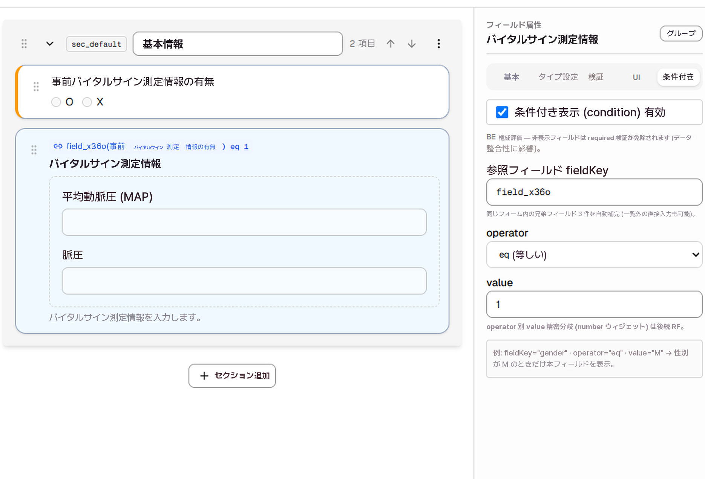
事前バイタルサイン測定情報の有無 が 1 のときだけ表示されるように設定した状態参照フィールド fieldKey = field_x36o — 同じフォームの「事前バイタルサイン測定情報の有無」フィールドを指します。4.3 の検証規則と同じフィールドです。
①~③をすべて入力した結果 — キャンバスのバッジが 🔗 field_x36o(事前バイタルサイン測定情報の有無) eq 1 と具体的になります。
operator = eq (等しい)
value = 1 — 画面に表示される O ではなく、その選択肢の保存値を入力します。
⚠ 画面の案内 — 「非表示フィールドは required 検証が免除されます (データ整合性に影響)。」
下部の例 — fieldKey="gender" · operator="eq" · value="M" → 性別が M のときだけ本フィールドを表示。
注意事項
必須確認 データ破損 · フォーム完了不可
- • ⛔ value には画面の文言ではなく保存値を入力します。参照フィールドが画面に
O·Xと表示されるからといってOと記入すると、条件が成立せず、ボックスが最後まで表示されません。参照するフィールドの選択肢一覧で、保存値を先に確認してください。 - • ⛔ 参照フィールドの保存値を変更すると、条件が気づかないうちに壊れます。保存値を
1からYに変更すると、この条件はエラーもなくただ成立しなくなります — そのため、発行後の保存値の変更は危険です。 - • ⛔ グループのメンバーを参照フィールドとして使うときは注意してください。メンバーは候補に表示されますが、自分のグループのメンバーを自分のグループの条件に使うと、グループが非表示になった瞬間にそのメンバーも非表示になり、条件を元に戻せなくなります。6.1
誤解しやすい動作
- • 設定した後はプレビューで確認してください。基準となる値を変えながら、ボックスとメンバーが実際に表示されたり消えたりするかを確認する必要があります。
付録
- 7.1タブ別の設定項目一覧
- 7.2必ず覚えておくこと · 扱っていないもの
7.1タブ別の設定項目一覧
タブ別の設定項目
| タブ | 項目 | 何を決めるか | 本文 |
|---|---|---|---|
| 基本 | fieldKey | グループのキー — ⚠ 値は保存されない(メンバーのキーに保存) | 2.1 |
| label (表示名) | ボックスのタイトル — まとまりの基準が分かるように | 2.1 | |
| description (ヘルプ) | ボックスの下の補助説明 — メンバー全体に該当する内容だけ | 2.1 | |
| 必須入力 | メンバーのうち一つでも埋める必要があるか — ⚠ メンバーの必須とは独立 | 2.2 | |
| SDV検証対象 | ⚠ グループではなくメンバーに指定すること(グループには照合する値がない) | 2.3 | |
| タイプ設定 | 行あたりの項目数 (itemsPerRow) | 1行にメンバー何個 (1~4 · デフォルト 1) — コンテナのメンバーは無視 | 3.1 · 3.4 |
| グループにフィールドを追加 | フォームのフィールドを選んでグループへ移動 — 新しく作るのではない | 3.2 · 3.3 | |
| メンバー一覧 (✏ ∧∨ 🗑) | メンバーの属性へ移動 · 順序変更 · ⚠ 🗑 = 外す(削除ではない) | 3.3 | |
| 検証 | ruleType | 「他フィールドと比較」だけが意味を持つ | 4.2 · 4.3 |
| 値の範囲 · 形式 · 小数桁数 | ⛔ グループに設定しないこと — 効果がないか、保存をブロックする。メンバーに設定すること | 4.2 | |
| 比較項目 | ⛔ グループ自身を選ぶと保存がブロックされる · メンバーは候補に表示される | 4.3 | |
| message · 違反時 | 違反時の文言(空欄禁止) · 他フィールドと比較は保存ブロックに固定 | 4.2 · 4.3 | |
| UI | レイアウト幅 | ボックスの幅 — ⚠ 行あたりの項目数と掛け合わされる | 5.2 |
| 読み取り専用 | 表示するが変更できないように — メンバー全員 | 5.3 | |
| 非表示 | 画面に非表示 — メンバー全員 · 値は残り、必須は免除されない | 5.3 | |
| placeholder · helpText | ⛔ placeholder は適用されない · helpText のみ動作 | 5.4 | |
| 条件付き | 条件の有効化 | 条件一つでメンバー全員が一緒に表示 · 非表示 (必須検証を免除) | 6.1 |
| 参照フィールド fieldKey | 条件の基準 — グループのメンバーも候補に含まれる | 6.2 | |
| operator · value | 比較方法と比較する値 (保存値を入力) | 6.2 |
フィールドグループとテーブル型 — 似ているようで正反対
| 項目 | テーブル型 (GRID) | フィールドグループ (GROUP) |
|---|---|---|
| 何を集めるか | 同じ項目を複数件 (行が増える) | 異なる項目を一つのまとまりに (項目数は固定) |
| 下位項目の作成 | 列を新しく作る | フォームのフィールドを選んで移す — 最上位フィールド数が減る 3.3 |
| 下位項目の位置づけ | 表の中にだけある列 | 依然として最上位フィールド — 自分のキー · 必須 · 検証をそのまま持つ |
| 検証 · 条件付きでの参照 | 列は参照不可 | メンバーを直接参照できる (4.3 の案内の「4 項目」) |
| 下位の必須の動作 | 列の必須が表全体を集計対象に引き上げる | メンバーの必須はメンバー自身のもの — グループの必須とは独立 2.2 |
| 行/項目数 | 記録者が [行追加] で増やす | 作成者が決めたメンバー数で固定 — 記録者は増やせない |
7.2必ず覚えておくこと · 扱っていないもの
必ず覚えておくこと
必須確認 データ破損 · フォーム完了不可
- • グループは値を持ちません。値のチェック(範囲 · 形式) · SDV · デフォルト値は、すべてメンバーに指定してください。グループに設定すると、効果がないか、保存をブロックします。2.3 · 4.2
- • 🗑 は削除ではなく「グループから外す」です。フィールドも値も消えず、最上位に戻ります。3.3
- • 検証タブの「比較項目」としてグループ自身を選ばないでください。メンバーを一つでも埋めた瞬間に違反となり、保存が永久にブロックされます。4.3
- • グループの必須とメンバーの必須は独立しています。グループを必須にしてもメンバーを一つだけ埋めれば満たされ、グループの必須をオフにしてもメンバーの必須はそのまま有効です。2.2
- • placeholder は適用されません。欄の中の案内は、✏ でそのメンバーに入って指定してください。5.4
- • UI タブの非表示は必須を免除しません。条件に応じて隠すには、必ず条件付き表示を使用してください。5.3 · 6.1
- • 狭い幅と大きな行あたりの項目数を重ねないでください。二つの設定が掛け合わされ、欄が狭くなりすぎます。3.4 · 5.2
誤解しやすい動作
- • メンバーは依然として最上位フィールドです。そのため、検証規則と条件付きで直接参照できます — 表の列とは決定的に異なります。3.3 · 4.3
- • 条件は一度設定するだけで済みます。グループが非表示になると、メンバーも一緒に非表示になります。6.1
- • まとめるフィールドを先に作ってください。グループだけを作っておいても、入れるものがないため何もできません。3.1
参考
- • キャンバス左側のオレンジ色のバーは「保存前の変更あり」の表示です。グループとは無関係で、保存すると消えます。1.1
この文書で扱っていないもの
※ 未測定宣言を許可 — 基本タブに項目自体が表示されません。グループは値を持たないため、「確認できない」を宣言する対象がないからです。必要ならメンバーでオンにしてください。1.1
AE意味ロール — 基本タブに項目自体が表示されません。有害事象のロールははい/いいえか単一選択フィールドに指定するもので、まとまりには指定できません。1.1
デフォルト値 (defaultValue) · 自動計算 (calculation) — タイプ設定タブに項目がありません。どちらも値を扱う機能なので、メンバーに指定してください。3.1
折りたたみ · 展開 — ボックスを折りたたんでおく設定は作成画面では提供されていません。ボックスは常に展開された状態で表示されます。
メンバーを複数まとめて追加 — ピッカーでは一度に一つずつしか選べません。メンバーの数だけ「選ぶ → [追加]」を繰り返してください。3.2
表(テーブル型)の列をグループに入れる — 列は表の中にだけある項目なので、ピッカーの一覧に表示されません。グループでまとめられるのは最上位フィールドだけです。3.2
グループのネストの上限 — グループの中にグループを入れることはできますが、3重までです。上限を超える候補はピッカーで無効として表示され、理由も一緒に表示されます。3.1 · 3.2
プロジェクト検証規則での参照 — 他のフォームの値を見る「プロジェクト検証規則」画面では、グループ自身を選べません。グループのキーには値が載らないためで、メンバーは選べます。4.1